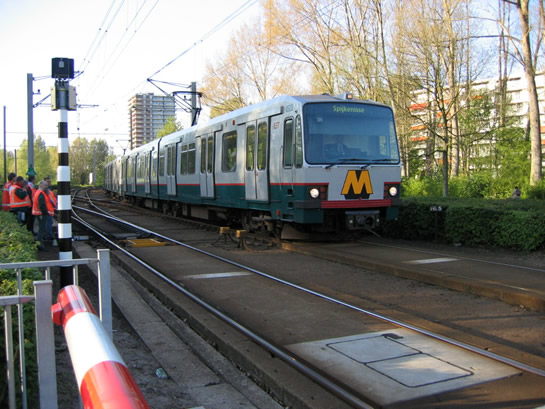
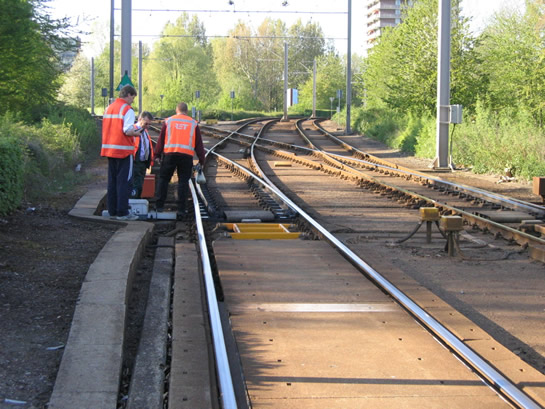

Storing wisselcomplex Alexander2 (Pres. Rooseveltweg)...
- woensdag 10 december 2008 15:53
- Geschreven door Joachim
Omstreeks 18.00 uur ontvingen we de melding dat er een wisselstoring zou zijn ter hoogte van de President Rooseveltweg. Door de storing kon een deel van het metroverkeer niet zijn normale weg vervolgen. De metro's naar Ommoord moesten uitwijken naar Zevenkamp, er kon namelijk geen veilige wisselsituatie tot stand gebracht worden in en vanuit de richting Ommoord.
Ook vanuit Zevenkamp kon er niet veilig gereden worden(door de foute wisselstand) over spoor 1, hierop werd besloten om het verkeer om te leiden via spoor 2. Er werd tijdelijk enkelsporig gereden tussen station Alexander en station Nieuw Verlaat v.v. De RET had bussen besteld, die kwamen helaas niet opdagen. De gedupeerde reizigers waren genoodzaakt te lopen van Graskruid naar Romeynshof of andersom. Tussen de stations Romeynshof en Binnenhof werd een pendeldienst onderhouden.
Rond 18.10 was een team van RET Weg&Werken ter plaatse, zij onderzochten het wissel. Een doorslippende motor van het wissel 1279 was de oorzaak als gevolg van een fout in de relaisruimte.
Om ongeveer 20.00 uur werd het wisselcomplex weer vrijgegeven en werd de metrodienst op beide sporen hervat. De vertragingen waren groot, doordat er vertreksverboden werden gegeven op station Alexander vanwege het overlopen en enkelsporig rijden.
Een dronken vrouw zorgde korte tijd voor overlast, deze ging op de sporen lopen ten noorden van station Graskruid. De toegesnelde RET-Smartploeg begeleidde de vrouw weer het station op, later is zij door de politie meegenomen.
Retmetro.nl maakte de volgende foto's, met korte toelichting!

En zo werd het tijdelijk opgelost, géén metroverkeer van en naar Ommoord, wel metroverkeer van en naar Zevenkamp via spoor 2.
Een 5400-metrosneltramstel rijdt station Graskruid binnen op het 'verkeerde' spoor.
En dan te bedenken dat dit nog niet alle RET-wagens ter plaatse waren...

Het wissel wordt nagekeken, er wordt gezocht naar de oorzaak...
De pendeldienst tussen Binnenhof en Romeynshof staat rustig te wachten op station Romeynshof. Ja, da's een leuke rit. Zoveel standpunt in 2 uur heeft niemand!
Dit is em dan: wisselmotor van wissel 1279. Het zal nu niet lang meer duren voordat de storing is opgelost.
Werkt 'ie? Hij werkt! Het metroverkeer wordt weer hervat...
En tegen 20.00 uur komt zo de eerste metro weer over spoor 1 richting Spijkenisse aanrijden...
En ook het metroverkeer naar Ommoord wordt ook weer hervat...